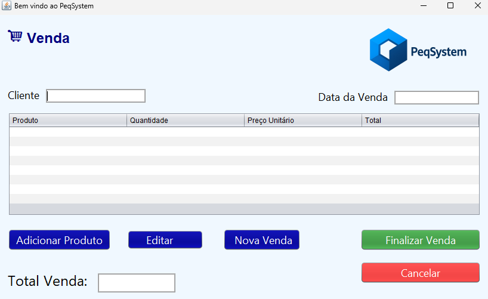
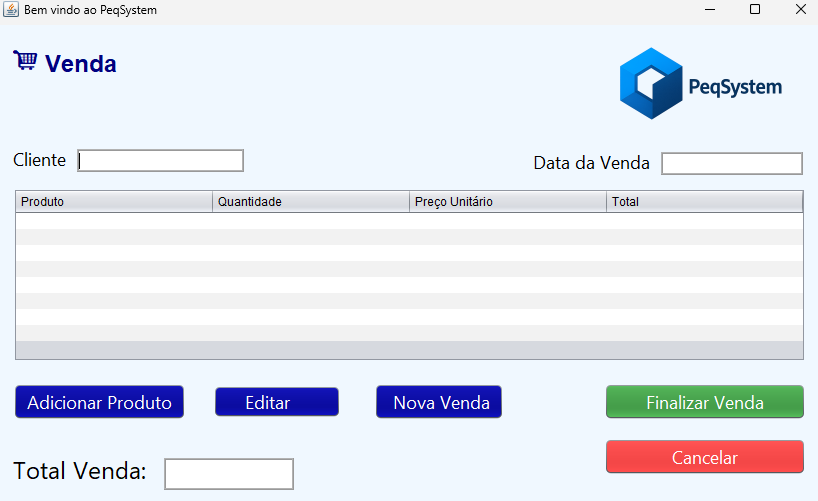

Sobre mim

Sou Mary Helen Oliveira, técnica em Análise e Desenvolvimento de Sistemas e graduanda em Banco de Dados . Apaixonada por tecnologia e curiosa sobre como as coisas funcionam, estou em transição de carreira e busco uma oportunidade de estágio para aplicar meus conhecimentos e crescer na área. Minha experiência com atendimento ao público na área da saúde me ensinou a lidar com desafios, manter a empatia e buscar soluções com calma e foco.
GitHub: meuGitHub
Celular: (47) 99716-9309
Cidade: Joinville, SC
Email: maryoliver235@hotmail.com
Freelance: Disponível


 
